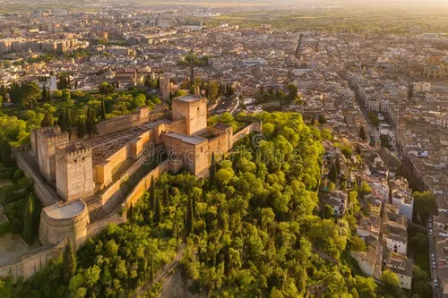

Nació en el siglo XIII de la mano de Muhammad I, el fundador de la dinastía Nazarí. Lo que empezó como una zona militar y defensiva (una "fortaleza roja") se convirtió rápidamente en una ciudad palatina independiente donde los sultanes vivían rodeados de jardines paradisíacos, fuentes, albercas y palacios decorados con un detallismo alucinante. Tras la conquista cristiana en 1492, los Reyes Católicos y Carlos V añadieron algunos elementos, como el palacio renacentista dentro del recinto.
Es Patrimonio de la Humanidad por la UNESCO y uno de los monumentos más visitados del planeta. Hoy en día funciona como un complejo museístico y monumental de visita obligatoria, donde se cuida al máximo la conservación de sus delicados estucos, patios (como el de los Leones) y jardines (el Generalife), cautivando a millones de viajeros de todo el mundo.